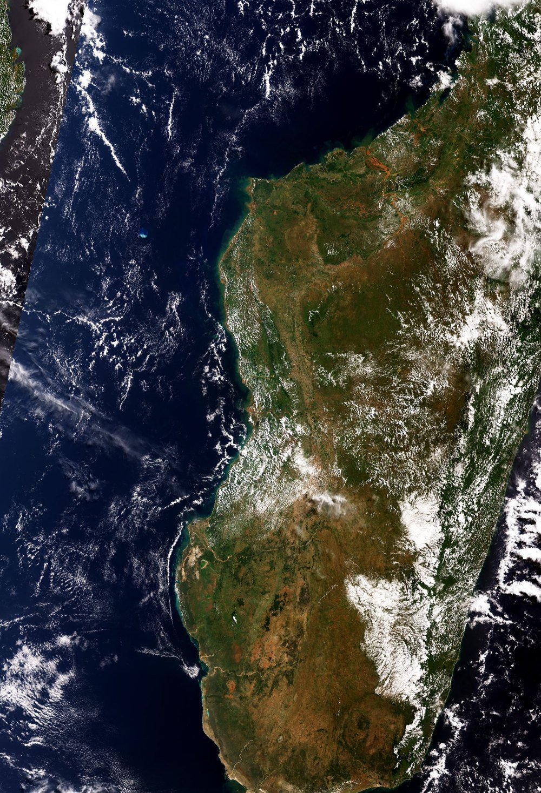

CFMADCON / FAQ
Frequently asked questions
Answers about our practices, EagleNatureInsight™ and how we work. If your question is not here, speak to our team.
Space & Earth Observation

What is EagleNatureInsight™?
A CFMADCON platform that uses satellite and environmental data to assess how each of a company's sites depends on and affects nature. Each assessment produces a plain-language profile and a prioritised action plan aligned with the TNFD LEAP approach.
What will we receive?
A PDF report with the assessment results, maps, interpretations and recommended next steps, together with business-relevant flags, an action plan and the evidence gaps to follow up.
Do we need our own satellite data or GIS team?
No. We source and process the Earth observation and environmental data. You provide basic information about your sites, such as their locations and how they operate.
Can we add our own evidence?
Yes. You can add your own water, land-use and operational records, and upload field photos and observations to compare satellite views with conditions on the ground.
What is the TNFD, and why does it matter to my business?
The Taskforce on Nature-related Financial Disclosures provides a framework for organisations to assess and report their nature-related dependencies, impacts, risks and opportunities. Buyers and lenders increasingly ask their suppliers and clients for this information.
Do you work on space projects beyond Earth observation?
Yes. Our space-sector advisory covers programme design, funding strategy and monitoring and evaluation for space programmes.
Finance & Tax
Do you only help with once-off submissions?
We offer once-off support, such as returns, verifications and disputes, and monthly retainers for ongoing accounting, compliance and monitoring.
Can you help if our records are behind?
Yes. We start with a diagnostic to establish what is needed, then bring your accounting and tax records up to date in a structured way.
Do you assist with SARS verifications and disputes?
Yes. We prepare organised, indexed supporting packs aligned to SARS requests and advise on whether a verification response or an objection is the appropriate route.
General
Do you work with clients outside Cape Town?
Yes. We support clients remotely across South Africa and work alongside your existing bookkeeper, payroll provider or accountant where needed.
Can one engagement draw on more than one practice?
Yes. Our multidisciplinary model means a single engagement can combine financial, data and Earth observation expertise, for example a funder report that brings together financial records, impact data and site-level environmental evidence.
Still have a question?
Contact our team and we will point you to the right specialist.